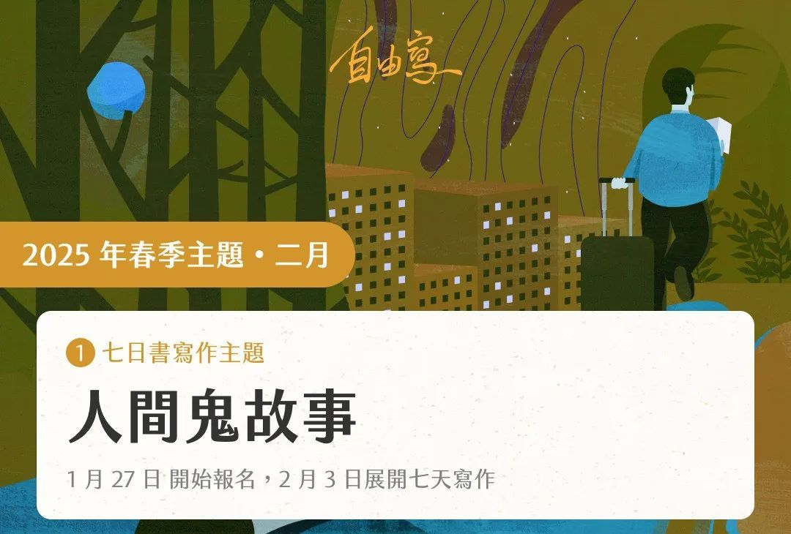

二月，Matters 马特市七日书的主题是「人间 “鬼” 故事」。
「鬼」有很多种模样，那些不可诉说的经历、无法释怀的事，或让你面目全非的生命时刻，像鬼一样，难以言说，或看不见却如幽灵般影响着你。
你对「鬼」的想象是什么？
其实，每个人心中都藏着「鬼」。有些是埋藏在深处的秘密，不能见光；有些则是阴魂不散的心魔，让人无法喘息。那些不可诉说、无法释怀的经历，或是如影随形的回忆，都是一个个围绕自我的鬼故事，时而惊悚，时而沉重，看不见却持续发挥作用。
马特市邀请你，透过书写，将那些无法见诸于世的秘密、无法忘怀的遗憾、难以言说的关系，甚至夸张到令人难以置信的故事，化作文字。它们可以真实，也可以虚构，可以是散文、小说或诗歌，甚至是绘画、影像，每篇都承载着你的情感与生命经历。
这是一场与自己对话的旅程，是一次揭开内心深处鬼影的勇敢邀请。原本压抑在心底的秘密，或许就在这一刻，找到能安放的出口。你，准备好与你的「鬼」面对面了吗？
共写活动即日起开始报名，2 月3 日开始写作，这是一次揭开内心深处鬼影的勇者之旅。本期加映讲座邀请台湾作家陈思宏，他的知名小说《鬼地方》正是围绕着「鬼」这个意象，探讨人与内心深处的阴影和未竟之事的纠缠。讲座将于2 月19 日举行。
迎接 2025 年，一起记录生活与人生。
本活动，你可以一起写下你的主题小故事；也可以阅读他人的相关小故事。
在这个为期七天的计划里，将有一群同伴与你一起，每天一个题目，以自由书写的方式，完成七天的日记。它是一个练习，让你沉淀生命故事的同时，亦勇于相信自己的写作；它是一场陪伴，知道写作路上有人阅读，这是一场自己的旅程，更是结伴同行。
自由写（Free Writing）是一个专门的写作技巧，意指人们在一段有限的时间内写作，有时是根据指定的题目书写，写作时不太关注修辞、常规和结构，让思维自然流淌。作品不一定完美、不一定严谨，但可以帮助作者克服自我批评的障碍。作家彼得・艾尔博（Peter Elbow）致力推动自由写作，「写作的结果是你必须从用错的词写错的意思开始；但要持续写作，直到用对的词来表达正确的意思。只有到最后，你才会知道自己在说什么。」
「自由写」亦是回到心里的那个地方，对应一个题目，只写二十分钟、半小时，写作时要保护这段时间，屏除干扰，跟思绪尽情对话，最后看看你写下了什么，并且尽量不要评判它。因为你要相信自己写下了最重要的内容。

本期题目
第二天
你人生中遭遇过什么事情，夸张到，讲出来连别人也不相信是真的。
第三天
写一段在关系之中的鬼故事。可以是亲密关系、也可以是职场、友谊。它可能是一个令你感到匪夷所思的事件，而回头想去又发现深藏于你们的关系来源之中；你可能已经逃离，却又因为难以言说而感到不甘心或者放不下。
第四天
写一只你挂念的「鬼」。有些人或事，可以是在你生命中过去的人、真实离去了的人，被隐藏或你想忘掉的人、不可提起而带有某种禁忌的人、也可以是某一部分的自己。写下任何你想到的这样的故事吧。
活动报名：https://matters.town/e/x4rv6dwgk68o (科学上网)
写作期 ：2 月 3 号（一）至 2 月 10 号晚上 23:59（东八区）截止